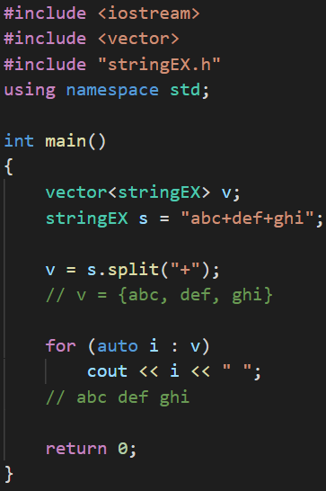

Chocomint's Personal Page
HeadersTitle
HeadersSubTitle
Header Downloader

你可以在這裡下載到這裡所有的標頭檔！
這個應用程式會根據上傳的檔案隨時更新，所以除了跟新版本之外你不需要再次下載！
特別感謝：
技術支援 By Coding Bear
BigNumber - 大數運算
所有在BigNumber.h中的函數：
class BigInt
{
private:
std::vector<int> container;
bool positive;
int at(int index) { return this->container[index]; }
public:
friend BigInt operator""_BigInt(const char *val, size_t size);
BigInt() {}
BigInt(const BigInt &val) { *this = val; }
template <class T>
BigInt(const T &val);
// Get digit from index
int operator[](int index) { return this->container[this->container.size() - index]; }
std::size_t length() { return this->container.size(); }
std::vector<int> get_container() { return this->container; }
bool is_positive() { return this->positive; }
void operator<<(const int &dp);
void operator=(const BigInt &ref);
BigInt operator+(const BigInt &ref);
BigInt operator-(const BigInt &ref);
BigInt operator*(const int &ref);
BigInt operator*(const BigInt &ref);
BigInt operator^(const int &ref);
void operator++(int);
void operator--(int);
void operator+=(const BigInt &ref);
void operator-=(const BigInt &ref);
bool operator==(const BigInt &ref);
bool operator!=(const BigInt &ref);
bool operator>(const BigInt &ref);
bool operator<(const BigInt &ref);
bool operator>=(const BigInt &ref);
bool operator<=(const BigInt &ref);
};
Browse BigNumber.h file
=[新增の函數解析]=
using namespace chocomint;
-
建構子 constructor
一般建構子：BigInt() {}
複製建構子：BigInt(const BigInt &val);
整數建構子：template<class T> BigInt(const T &val);
-
位移運算子
void operator<<(const int &dp);
直接將整個數向左位移dp個數，相當於 ×10dp
#include <iostream> #include "BigNumber.h" using namespace std; using namespace chocomint; int main() { BigInt bi = 123; bi << 2; cout << bi << "\n"; // 12300 return 0; }
Graph - 圖形結構
敬請期待！
Matrix - 矩陣計算機
所有在Matrix.h中的函數：
template <class T>
class matrix
{
private:
T det_diag(const int &m, const int &n);
public:
vector<vector<T>> value;
matrix(){};
matrix(int n, int _val);
matrix(int row, int col, int _val);
int row_size();
int column_size();
vector<T> operator[](int index);
void operator=(const matrix<T> &ot);
void operator=(const vector<vector<T>> &ot);
matrix<T> operator+(const matrix<T> &ot);
matrix<T> operator-(const matrix<T> &ot);
matrix<T> operator*(const matrix<T> &ot);
matrix<T> operator*(const T &ot);
matrix<T> operator/(const T &ot);
matrix<T> &operator+=(const matrix<T> &ot);
matrix<T> &operator-=(const matrix<T> &ot);
matrix<T> &operator*=(const matrix<T> &ot);
matrix<T> &operator*=(const T &ot);
T det();
matrix<T> Trans();
T M(int r, int c);
T A(int r, int c);
matrix<T> adj();
matrix<T> inverse();
};Browse Matrix.h file
=[新增の函數解析]=
using namespace std;
-
二維陣列大小
int row_size(); | int column_size(); - 運算子 以下舉例各種運算子 ( file )：
-
行列式值(determinant) - det
T det(); -
轉置矩陣(transpose) - Trans
matrix<T> Trans(); -
子式(minor) - M
T M(int r, int c); -
餘因式(cofactor) - A
T A(int r, int c); -
伴隨矩陣(adjoint) - adj
matrix<T> adj(); -
反矩陣(inverse) - inverse
matrix<T> inverse();
Example :
formula - 公式運算
敬請期待！
String EX - 字串擴充
所有在stringEX.h中的函數：
class stringEX : public string
{
public:
stringEX() : string(){};
stringEX(const char *val) : string(val){};
stringEX(const string val) : string(val){};
vector<stringEX> split(const stringEX &ref);
vector<stringEX> splitByLength(const int &len);
void replaceAll(const stringEX &rep, const stringEX &ref);
stringEX toHex(bool BIG);
vector<int> toCharVector();
stringEX toUpper();
stringEX toLower();
stringEX toURI(const stringEX &uri);
void insertEX(int pos, stringEX &ref);
friend char list(int &ref);
friend stringEX base64_encode(string &ref);
friend stringEX base64_encode(const char *ref);
friend stringEX base64_decode(stringEX &ref);
friend stringEX base64_encode(stringEX &ref, int times);
friend stringEX base64_decode(stringEX &ref, int times);
friend stringEX Str_merge(const stringEX &separator, vector<string> string_list);
friend stringEX Str_merge(const stringEX &separator, vector<stringEX> string_list);
friend stringEX operator""_utf8(const char *ref, size_t size);
};Browse stringEX.h file
=[新增の函數解析]=
using namespace std;
-
分隔函數 - split
vector<stringEX> split(const stringEX &ref); -
長度分隔函數 - splitByLength
vector<stringEX> splitByLength(const int &ref); -
替代函數 - replaceAll
void replaceAll(const stringEX &rep,const stringEX &ref); -
轉16進制 - toHex
stringEX toHex(bool BIG = true);
分隔函數可以把字串參照 ref 字串做分隔，並輸出至一個 vector<stringEX> 中存放。
Example :

長度分隔函數可以把字串依照長度 ref 做分隔，最後一個長度不足的字串也會放入，並輸出至一個 vector<stringEX> 中存放。
Example :
替代函數可以將一個字串中所有的 rep 字串替換成 ref 。
Example :
將一個字串中的所有字元轉換成 UTF-8 編碼
BIG 為控制輸出字串是否為大寫字母，預設是 true
Example :